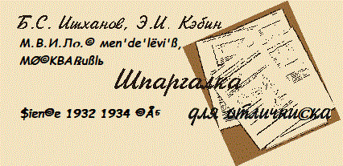

Представленные материалы подготовлены на основе лекций,
прочитанных на физическом факультете профессором Б.С. Ишхановым по
общему курсу физики - "Физика атомного ядра и частиц". Особенностью,
предлагаемого Вашему вниманию подхода к этому курсу, является то, что в
начале излагается физика высоких энергий или физика частиц и даются
общие для ядерной физики высоких и низких энергий понятия. При изложении
физики ядра, эти понятия при необходимости конкретизируются. Кроме того,
даются некоторые сведения из квантовой механики, необходимые для
понимания излагаемого материала. Использование шпаргалки предполагает
посещение лекций, чтение книг и соответствующих разделов сайта, в
которых материал изложен более углубленно и подробно.
Частицы и ядра
Основные вопросы по курсу "Физика ядра и
частиц"
|
Хроника |
|
Элементарные составляющие материи |
|
Измерения |
|
Сечение |
|
Энергия реакции. Порог реакции |
|
Ускорители |
|
Взаимодействие частиц с веществом |
|
Детекторы частиц |
|
Новая физика начала ХХ века - теория относительности, квантовая физика |
|
Основные соотношения релятивистской физики |
|
Резерфорд открывает атомное ядро |
|
Pазмеры и структура ядер |
|
Структура нуклона |
|
Глубоконеупругое рассеяние электрона на протоне |
|
Частицы |
|
Античастицы |
|
Связь характеристик частиц и античастиц |
|
Распады частиц |
|
Взаимные превращения частиц |
|
Энергия реакции, порог
реакции |
|
Кварки, лептоны, калибровочные бозоны |
|
Механизм взаимодействия частиц |
|
Электромагнитное взаимодействие |
|
Лептоны |
|
Электрон |
|
Электронное антинейтрино обнаружено |
|
Тождественны ли нейтрино и антинейтрино? |
|
Мюон. Мюонное нейтрино |
|
Тау-лептон. Тау-нейтрино |
|
Лептонные числа |
|
Кванты слабого взаимодействия (W, Z-бозоны) |
|
Кварки - частицы, из которых состоят адроны |
|
Основные положения модели кварков |
|
Кварковая структура адронов. Барионы. Мезоны |
|
Барионное число B |
|
Изоспин частиц. Изоспиновые мультиплеты |
|
Пи-мезоны |
|
Резонансы. Возбужденные состояния нуклонов |
|
Странные частицы, s-кварк |
|
K-мезоны |
|
Распад лямбда-гиперона |
|
Каскадные гипероны |
|
Омега-минус-гиперон |
|
Очарованные частицы, с-кварк |
|
Нейтрино рождают очарованные частицы |
|
Красивые частицы, b-кварк |
|
Адронные струи |
|
Топ-кварк |
|
Цвет |
|
Глюоны |
|
Чармоний, боттоний |
|
Количество поколений фундаментальных фермионов |
|
Слабые взаимодействия. Промежуточные бозоны |
|
Открытие промежуточных бозонов |
|
Слабые распады лептонов и кварков |
|
Распады и реакции в кварковой модели |
|
Слабые взаимодействия нарушают симметрии |
|
Поляризация. Спиральность |
|
Пространственная инверсия. Р-четность. |
|
Примеры процессов с сохранением и без сохранения пространственной четности |
|
Зарядовое сопряжение. Зарядовая четность |
|
Комбинированная инверсия. CP-четность |
|
Нейтральные каоны нарушают CP-симметрию |
|
Осцилляции в пучке нейтральных каонов |
|
Обращение времени |
|
СРТ-теорема |
|
Законы сохранения и симметрии |
|
Атомное ядро |
|
N-Z диаграмма атомных ядер |
|
Масса и энергия связи ядра |
|
Спин ядра |
|
Электрический квадрупольный момент и форма ядра |
|
Магнитный дипольный момент ядра |
|
Изоспин ядер. Изоспиновые мультиплеты |
|
Дейтрон. Свойства нуклон-нуклонного взаимодействия |
|
Мезонная теория ядерных сил |
|
Модели атомных ядер |
|
Капельная модель ядра. Формула Вайцзеккера |
|
Модель ядерных оболочек. Одночастичные состояния |
|
Коллективные возбуждения ядер |
|
Законы радиоактивного распада ядер |
|
Альфа-распад |
|
Центробежный и кулоновский барьеры |
|
Бета-распад |
|
Радиоактивные ряды |
|
Естественная радиоактивность |
|
Несохранение пространственной четности в слабых взаимодействиях. Эксперимент
Ву |
|
Гамма-излучение ядер. Электрические и магнитные гамма-переходы |
|
Ядерная изомерия |
|
Внутренняя конверсия |
|
Эффект Мессбауэра |
|
Схемы ядерных уровней |
|
Законы сохранения в ядерных реакциях |
|
Сечение реакции |
|
Ядерные реакции |
|
Механизмы ядерных реакций. Составное ядро |
|
Механизмы ядерных реакций. Прямые реакции |
|
Деление ядер |
|
Тяжелые ядра (Z < 100) |
|
Сверхтяжелые ядра (Z > 100) |
|
Экзотические виды радиоактивного распада |
|
Физика экзотических ядер |
|
Распространенность элементов |
|
Ядерные реакции в звездах |
|
Образование легчайших ядер. Дозвездная стадия образования элементов |
|
Звездная эволюция |
|
Горение водорода |
|
Поиск солнечных нейтрино |
|
Горение гелия |
|
Горение углерода и кислорода |
|
Горение кремния |
|
Образование элементов тяжелее железа |
|
История Вселенной |
|
Космические лучи. Их состав и происхождение |
|
Объединение взаимодействий |
|
Открытые вопросы физики ядра и частиц |
Некоторые сведения из квантовой механики
Дополнительные материалы
Приложения из лекций И.М. Капитонова
100-летие открытия атомного ядра
Литература
- Б.С. Ишханов, И.М. Капитонов, Н.П. Юдин. Частицы и атомные ядра.
М.: Изд. Московского университета, 2005.
- И.М. Капитонов. Введение в физику ядра и частиц.
М.: МГУ, 2000
- Субатомная физика. Вопросы. Задачи. Факты.
Под ред. проф. Б.С. Ишханова.М.: Изд. Московского университета, 1994.
- К.Н. Мухин. Экспериментальная ядерная физика.
М.: Энергоиздат, 1993.
- К. Готфрид, В. Вайскопф. Концепции физики элементарных частиц. М.:
Мир, 1988.
- Л. Валантэн. Субатомная физика: Ядра и частицы.
В двух томах. М.: Мир, 1986.
- Г. Фрауэнфельдер, Э. Хенли.
Субатомная физика.
М.: Мир, 1979.
- Ю.М. Широков и Н.П. Юдин. Ядерная физика. М.: Наука, 1972.
- Н.Г. Гончарова.
Семинары по физике ядра и частиц
- Б.С. Ишханов, Э.И. Кэбин. Физика
ядра и частиц. XX век. М., 2000.
- Б.С. Ишханов, Э.И. Кэбин. Экзотические
ядра. М.: Изд. Московского университета, 2002.
- Б.С. Ишханов, И.М. Капитонов, И.А. Тутынь. Нуклеосинтез во Вселенной.
М.: Изд. Московского университета, 1999.
- В.С. Замиралов, Б.С. Ишханов, И.М. Капитонов, А.П. Черняев. Физика
частиц. Законы сохранения и симметрии. М.: Изд. Московского
университета, 1995.

|
|